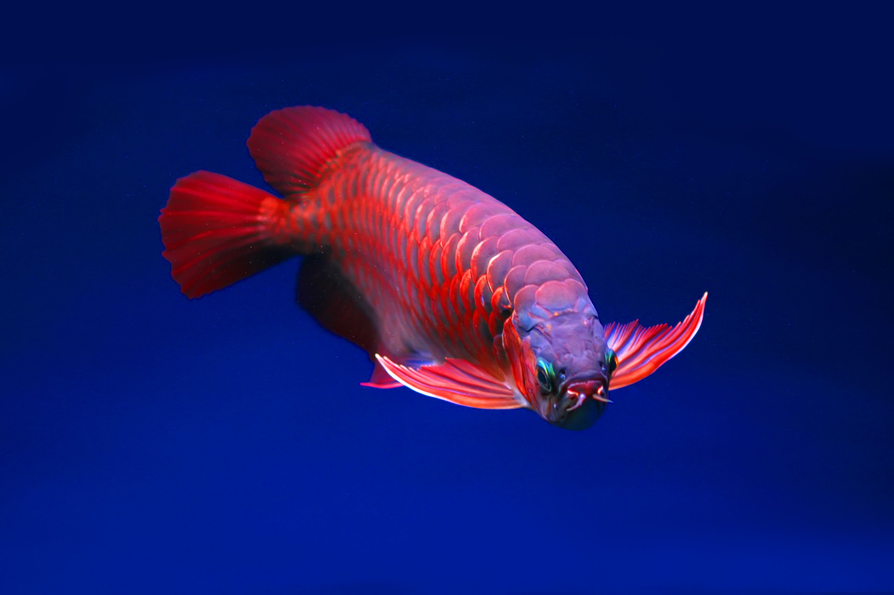

Top 5 Monster Fishes for Your Custom Aquarium

If you've recently upgraded to a massive custom aquarium (over 150 gallons), you might be looking to step away from tiny tetras and enter the world of "Monster Fish Keeping." Here are our top 5 favorites for serious hobbyists.
1. Asian Arowana (The Dragon Fish)
Considered a symbol of luck and prosperity, the Asian Arowana is the king of the aquarium. With their large metallic scales and barbels, they look like swimming dragons. They require pristine water and a very large footprint.
2. Flowerhorn Cichlid
Known for their vibrant colors and the massive "kok" (nuchal hump) on their heads, Flowerhorns are incredibly interactive fish. They will often follow your finger and "beg" for food. They are, however, very aggressive and usually need to be kept alone.
3. Freshwater Stingrays
Originating from the Amazon basin, freshwater stingrays are bottom-dwellers that require massive floor space. They are sensitive to water parameters but are absolutely mesmerizing to watch glide across fine sand.
Buy Monster Fish & Custom Tanks in Bangalore
Looking to upgrade to a monster tank? Browse our custom aquariums online or contact us to place a special order for Arowanas, Flowerhorns, and massive aquarium setups!
 Chat on WhatsApp
Chat on WhatsApp